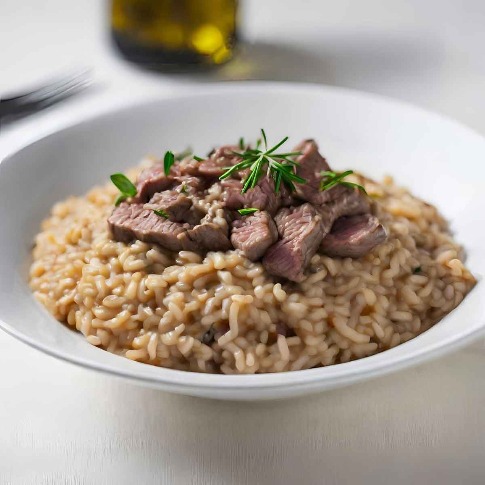

Risotto

Description
Risotto is a classic Italian dish made with short-grain rice, cooked slowly in broth until creamy. It's often flavored with onions, wine, cheese, and various fresh ingredients like mushrooms, seafood, or vegetables. The dish is known for its rich, comforting texture and intense flavor.
To prepare, sauté onions, toast the rice, gradually add broth, and stir until creamy. Serve immediately for a warm, satisfying meal.
Ingredients
- 1 cup of Arborio rice
- 4 cups of chicken or vegetable broth (warm)
- 1 small onion, finely chopped
- 2 tbsp of olive oil or butter
- 1/2 cup of dry white wine
- 1/2 cup of grated Parmesan cheese
- Salt and pepper to taste
- Optional: mushrooms, shrimp, or fresh herbs for added flavor
Steps
- Heat the broth in a pot and keep it warm.
- In a large pan, sauté the onion in olive oil or butter until translucent.
- Add the rice and toast it for 1-2 minutes until slightly golden.
- Pour in the white wine and stir until it evaporates.
- Add a ladleful of warm broth to the rice, stirring constantly until absorbed.
- Continue adding broth, one ladleful at a time, stirring frequently until the rice is creamy and cooked al dente (about 20-25 minutes).
- Stir in Parmesan cheese, and adjust seasoning with salt and pepper.
- Add optional ingredients like mushrooms or shrimp during the cooking process for extra flavor.
- Serve hot, garnished with fresh herbs or more Parmesan if desired.